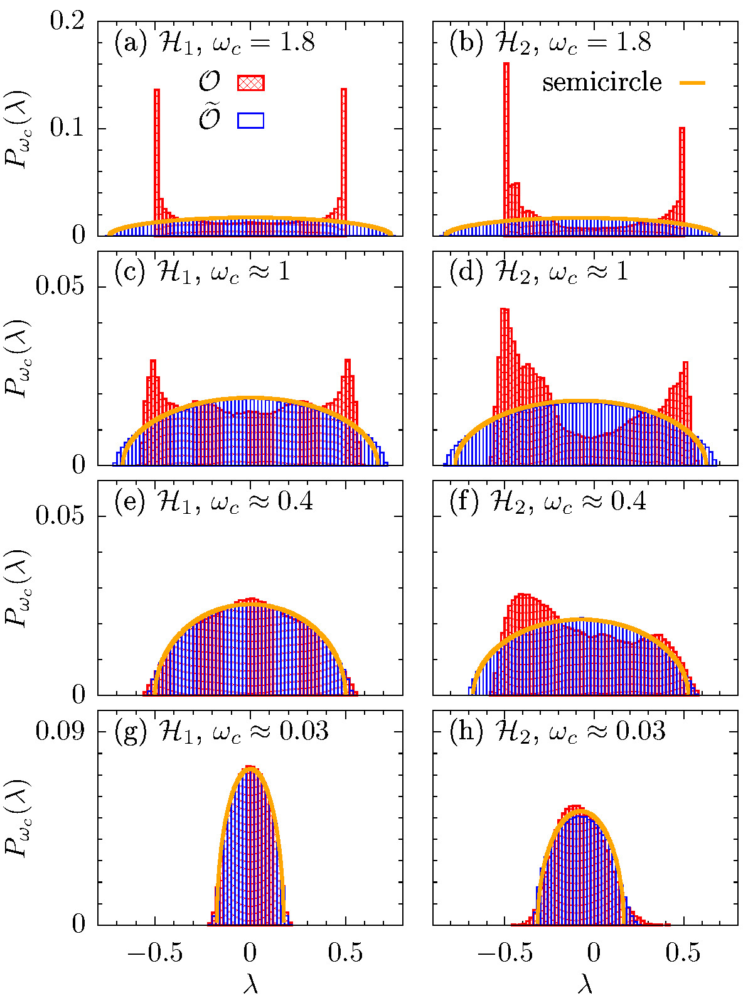

2024 is here - 30 years of Eigenstate Thermalization
12. January 2024
Hi everyone, the winter break is over and the year 2024 is well on its way. My previous year, working as a Marie Skłodowska-Curie scholar in the US, has been incredibly rewarding and challenging at the same time. I might write about my experiences in more detail in a future post.
Today, however, I would like to tell you about a topic that is close to my heart, namely the Eigenstate Thermalization Hypothesis (ETH). The ETH has been one of my main research interests over the last few years. While similar ideas have been around for quite some time, one of the pioneering works, that can be seen as one of ETH's starting points, has been a paper published in 1994 by Mark Srednicki, see here. Now, for its 30th anniversary, it seems fitting to use today's blog post for a (brief and subjective) review. While the subject is quite extensive, I will particularly provide my personal perspective on the ETH, with a focus on some recent developments.
The basic question that we are trying to understand is the following: How does an isolated quantum system relax to thermal equilibrium? Initially, this question seems basic and rather silly. After all, from our everyday experience, we know that everything around us has the tendency to thermalize. Examples include a hot cup of coffee that will cool down to room temperature, or the ice cubes in your favorite cocktail that will melt over time if you don't finish the drink quickly enough. In particular, the famous Second Law of Thermodynamics tells us that all matter, when left on its own, approaches over the course of time a configuration that maximizes its entropy.
From a microscopic perspective, however, the fact that systems routinely reach thermal equilibrium is less obvious. Namely, given an isolated quantum system, prepared in some (out-of-equilibrium) quantum state \(|\psi\rangle \), the time evolution of the system is described by the Schrödinger equation,
\[ |\psi(t)\rangle = e^{-iHt} |\psi(0)\rangle = \sum_m c_m e^{-iE_mt}|m\rangle\ , \]
where \(H\) is the Hamiltonian of the system and we have written \(|\psi(0)\rangle\) in terms of the eigenstates \(|m\rangle\) of \(H\) with eigenvalues \(E_m\). Apparently, the state will evolve without any obvious stationary fixed point (i.e., the eigenstates continue to acquire a phase factor depending on \(E_m\)). Nevertheless, in practice, we certainly do observe that the properties of most quantum systems, after some initial transient dynamics, indeed become approximately time independent and can be described by an appropriate thermodynamic ensemble. In fact, this not only applies to the above macroscopic systems, such as the cup of coffee, but also to microscopic isolated quantum systems, which can nowadays be realized to very good quality in various experimental platforms.
The key insight in order to understand thermalization, is to look at the behavior of observable expectation values (instead of just the state \(|\psi\rangle \)),
\[ \langle O(t) \rangle = \langle \psi(t)|O|\psi(t)\rangle\ , \]
with \(O\) being a physical (i.e., typically local) observable. From a mathematical point of view, observables are given by Hermitian matrices. The structure of these matrices (when written in the eigenbasis of the Hamiltonian) provides insights into the occurrence of thermalization. This can be seen when expanding the above expression of the time-dependent expectation value,
\[ \langle O(t) \rangle = \sum_{m,n} c_n^\ast c_m e^{-i(E_m-E_n)t} \langle n|O|m\rangle \\ \qquad \qquad \qquad \qquad \quad = \sum_{m=n} |c_m|^2 O_{mm} + \sum_{m\neq n} c_n^\ast c_m e^{-i(E_m-E_n)t} O_{mn} \ , \]
where again \(|\psi\rangle = \sum_m c_m |m\rangle\) and \(|m\rangle \) are the eigenstates of \(H\) with eigenvalues \(E_m\). In the long-time limit, only the first sum with \(m = n\) will contribute since the terms in the second sum will approximately cancel out each other due to the quickly oscillating complex exponential function. Thermalization can then be understood by assuming that the matrix structure of \(O\) is given by the following Ansatz (proposed by Srednicki),
\[O_{mn} = O(\bar{E})\delta_{mn} + \Omega^{-\frac{1}{2}}(\bar{E})f(\bar{E},\omega)r_{mn}\ , \]
where \(\bar{E} = (E_m + E_n)/2\) is the average energy, \(\omega = E_m - E_n\) is the energy difference, \(\Omega\) is the density of states, and the \(r_{mn}\) are erratically varying numbers with zero mean and unit variance. Moreover, \(O(\bar{E})\) and \(f(\bar{E},\omega)\) are smooth functions of their arguments. In particular, the smooth function \(O(\bar{E})\) will coincide with the microcanonical expectation value of \(O\) and, due to the smallness of the off-diagonal elements (which are suppressed by the exponentially large \(\Omega\)), thermalization is guaranteed. That is, \(\overline{\langle O(t)\rangle} = \sum_{m=n} |c_m|^2 O_{mm}\) will agree (up to small fluctuations) with the microcanonical equilibrium value independent of the choice of the initial state (i.e., the coefficients \(c_m\)).
Even after 30 years, the ETH is still and active area of research. One particular question that has recently attracted increased interest is concerned with the statistics of off-diagonal elements \(O_{mn}\) (or \(r_{mn}\)), that is, to better understand their pseudo-randomness and their residual mutual correlations. Consider the following sketch, which shows the matrix representation of a realistic operator written in the eigenbasis of some chaotic quantum system. If we take a submatrix at some fixed average energy \(\bar{E}\) and small energy width \(\Delta E\), then the matrix elements indeed look rather random, as predicted by the ETH Ansatz above (note that the sketch depicts real numerical data).

In a pager together with my colleagues, we approached the question of randomness of the \(r_{mn}\) in the following way. Given the small submatrix, we systematically set off-diagonal matrix elements above some cutoff frequency \(\omega_c\) to zero. For these banded \(\omega_c\)-dependent matrices, we then obtain their eigenvalue distribution \(P(\lambda)\) by diagonalizing the matrix. What we found is, when going to sufficiently small \(\omega_c\), \(P(\lambda)\) approaches the well-known Wigner semicircle distribution of random matrices. Thus, at sufficiently small energy scales, correlations between the \(r_{mn}\) seem to vanish and genuine random-matrix behavior emerges.
